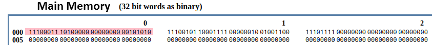

Afin de mettre en pratique ce que nous avons étudié dans le cours "Modèle d'architecture de von Neumann", nous allons utiliser un simulateur développé par Peter L Higginson. Ce simulateur est basé sur une architecture de von Neumann. Nous allons trouver dans ce simulateur :
- une RAM
- un CPU
Une version en ligne de ce simulateur est disponible ici : http://www.peterhigginson.co.uk/AQA/
Voici ce que vous devriez obtenir en vous rendant à l'adresse indiquée ci-dessus :
Il est relativement facile de distinguer les différentes parties du simulateur :
- à droite, on trouve la mémoire vive ("main memory")
- au centre, on trouve le microprocesseur
- à gauche on trouve la zone d'édition ("Assembly Language"), c'est dans cette zone que nous allons saisir nos programmes en assembleur
Revenons sur les parties RAM et CPU
La RAM
Par défaut le contenu des différentes cellules de la mémoire est en base 10 (entier signé), mais d'autres options sont possibles : base 10 (entier non-signé, "unsigned"), base 16 ("hex"), base 2 ("binary"). On accède à ces options à l'aide du bouton "OPTIONS" situé en bas dans la partie gauche du simulateur.
À faire vous-même 1
À l'aide du bouton "OPTIONS", passez à un affichage en binaire.
Comme vous pouvez le constater, chaque cellule de la mémoire comporte 32 bits (nous avons vu que classiquement une cellule de RAM comporte 8 bits). Chaque cellule de la mémoire possède une adresse (de 000 à 199), ces adresses sont codées en base 10.
Vous pouvez repasser à un affichage en base 10 (bouton "OPTION"->"signed")
Le CPU
Dans la partie centrale du simulateur, nous allons trouver en allant du haut vers le bas :
- le bloc "registre" ("Registers") : nous avons 13 registres (R0 à R12) + 1 registre (PC) qui contient l'adresse mémoire de l'instruction en court d'exécution
- le bloc "unité de commande" ("Control Unit") qui contient l'instruction machine en court d'exécution (au format hexadécimal)
- le bloc "unité arithmétique et logique" ("Arithmetic and Logic Unit")
Nous ne nous intéresserons pas aux autres composants de la partie CPU
Programmer en assembleur
Comme déjà dit plus haut, la partie de gauche permet de saisir des programmes en assembleur. L'assembleur du simulateur correspond exactement à l'assembleur que nous avons étudié dans le cours "Modèle d'architecture de von Neumann", n'hésitez pas à consulter cette partie.
À faire vous-même 2
Dans la partie "éditeur" ("Assembly Language") saisissez les lignes de codes suivantes
MOV R0,#42
STR R0,150
HALT
Une fois la saisie terminée, cliquez sur le bouton "submit". Vous devriez voir apparaitre des nombres "étranges" dans les cellules mémoires d'adresses 000, 001 et 002 :

L'assembleur a fait son travail, il a converti les 3 lignes de notre programme en instructions machines, la première instruction machine est stockée à l'adresse mémoire 000 (elle correspond à "MOV R0,#42" en assembleur), la deuxième à l'adresse 001 (elle correspond à "STR R0,150" en assembleur) et la troisième à l'adresse 002 (elle correspond à "HALT" en assembleur) Pour avoir une idée des véritables instructions machines, vous devez repasser à un affichage en binaire ((bouton "OPTION"->"binary")). Vous devriez obtenir ceci :
Nous pouvons donc maintenant affirmer que :
- l'instruction machine "11100011 10100000 00000000 00101010" correspond au code assembleur "MOV R0,#42"
- l'instruction machine "11100101 10001111 00000010 01001100" correspond au code assembleur "STR R0,150"
- l'instruction machine "11101111 00000000 00000000 00000000" correspond au code assembleur "HALT"
Au passage, pour l'instruction machine "11100011 10100000 00000000 00101010", vous pouvez remarquer que l'octet le plus à droite, (00101010)2, est bien égale à (42)10 !
Repassez à un affichage en base 10 afin de faciliter la lecture des données présentes en mémoire.
À faire vous-même 3
Pour exécuter notre programme, il suffit maintenant de cliquer sur le bouton "RUN". Vous allez voir le CPU "travailler" en direct grâce à de petites animations. Si cela va trop vite (ou trop doucement), vous pouvez régler la vitesse de simulation à l'aide des boutons "<<" et ">>". Un appui sur le bouton "STOP" met en pause la simulation, si vous rappuyez une deuxième fois sur ce même bouton "STOP", la simulation reprend là où elle s'était arrêtée.
Une fois la simulation terminée, vous pouvez constater que la cellule mémoire d'adresse 150, contient bien le nombre 42 (en base 10). Vous pouvez aussi constater que le registre R0 a bien stocké le nombre 42.


ATTENTION : pour relancer la simulation, il est nécessaire d'appuyer sur le bouton "RESET" afin de remettre les registres R0 à R12 à 0, ainsi que le registre PC (il faut que l'unité de commande pointe de nouveau sur l'instruction située à l'adresse mémoire 000). La mémoire n'est pas modifiée par un appui sur le bouton "RESET", pour remettre la mémoire à 0, il faut cliquer sur le bouton "OPTIONS" et choisir "clr memory". Si vous remettez votre mémoire à 0, il faudra cliquer sur le bouton "ASSEMBLE" avant de pouvoir exécuter de nouveau votre programme.
À faire vous-même 4
Modifiez le programme précédent pour qu'à la fin de l'exécution on trouve le nombre 54 à l'adresse mémoire 50. On utilisera le registre R1 à la place du registre R0. Testez vos modifications en exécutant la simulation.
Le simulateur prend en charge les labels :
À faire vous-même 5
Saisissez et testez le programme suivant :
MOV R0, #4
STR R0,30
MOV R0, #8
STR R0,75
LDR R0,30
CMP R0, #10
BNE else
MOV R0, #9
STR R0,75
B endif
else:
LDR R0,30
ADD R0, R0, #1
STR R0,30
endif:
MOV R0, #6
STR R0,23
HALT
À faire vous-même 6
Voici un programme Python :
x=0
while x<3:
x=x+1
Écrivez et testez un programme en assembleur équivalent au programme ci-dessus.